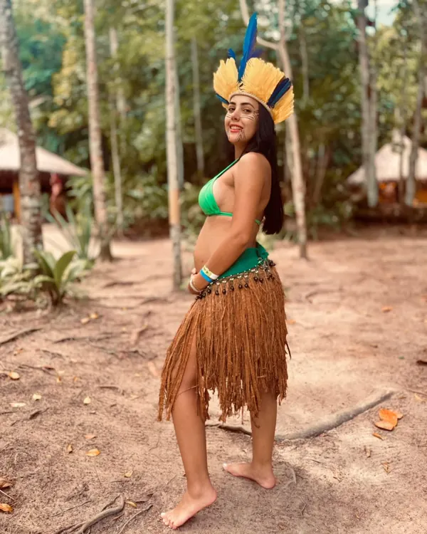
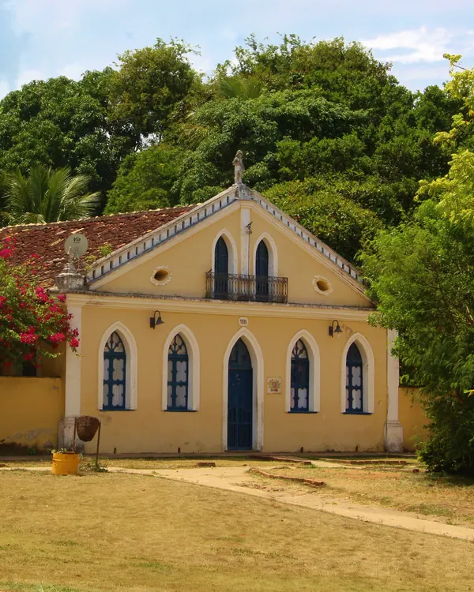

Início › Cultura e história
Cultura e história
O povo Pataxó e a cidade onde o Brasil começou, com guia de turismo do começo ao fim.

Reserva da Jaqueira
- Saída às 8h30
- 4 h na reserva
Uma manhã com o povo Pataxó: pintura tradicional, conversa sobre a história e a cultura, ritual e dança, degustação de peixe e um café com banana-da-terra, batata e chás.
Inclui
- Ingresso da Reserva da Jaqueira
- Veículo só para o seu grupo
- Guia de turismo
- As degustações
- Fotos durante o passeio

Rota do Descobrimento
- Saída às 8h
- Volta por volta das 16h
A Cidade Histórica de Porto Seguro, com capoeira, chocolate feito ali e acarajé. Depois, Coroa Vermelha: uma aldeia Pataxó, o centro de artesanato e o marco da Primeira Missa. O dia termina com cerca de 3 horas na Praia do Mutá.
Inclui
- Veículo só para o seu grupo
- Guia de turismo
- Cidade Histórica e aldeia indígena
- Parada no artesanato
- Fotos durante o passeio
Não inclui
- Alimentação
- Bebidas
- Compras